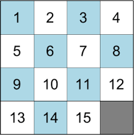
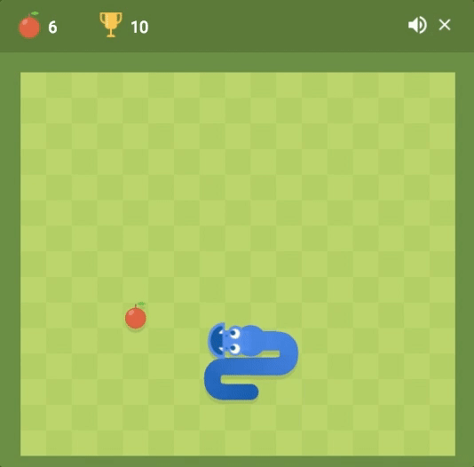
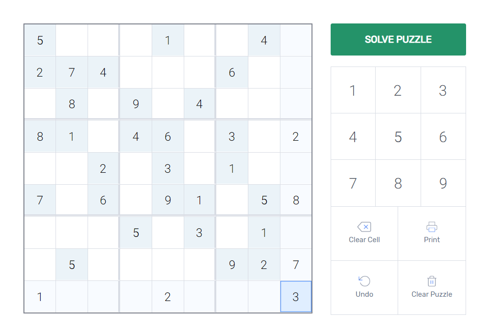

| N-Puzzle |
The n-puzzle is a classical problem for modelling algorithms
involving heuristics. Commonly used heuristics for this
problem include counting the number of misplaced tiles and
finding the sum of the taxicab distances between each block
and its position in the goal configuration.
The 15-puzzle (also called Gem Puzzle, Boss Puzzle, Game of Fifteen, Mystic Square and many others) is a sliding puzzle that consists of a frame of numbered square tiles in random order with one tile missing. The puzzle also exists in other sizes, particularly the smaller 8-puzzle. If the size is 3×3 tiles, the puzzle is called the 8-puzzle or 9-puzzle, and if 4×4 tiles, the puzzle is called the 15-puzzle or 16-puzzle named, respectively, for the number of tiles and the number of spaces. The object of the puzzle is to place the tiles in order by making sliding moves that use the empty space. wikipedia |
|  |
|
Tic-Tac-Toe (American English), noughts and crosses (British English),
or Xs and Os is a paper-and-pencil game for two players, X and O,
who take turns marking the spaces in a 3×3 grid.
The player who succeeds in placing three of their marks in a horizontal,
vertical, or diagonal row is the winner.
The Tic Tac Toe is a great way to pass your free timewhether you're standing in a line or spending time with your kids. Stop wasting paper and savetrees. Because of the simplicity of Tic Tac Toe, it is often used as a pedagogical tool for teachingthe concepts of good sportsmanship and the branch of artificial intelligence. wikipedia |
Tic Tac Toe |

|
| Snake Game |
The history of the Snake game goes back to the 1970's. However, it was the 1980's when the game
took on the look that we will be using. It was sold under numerous names and many platforms but
probably gained widespread recognition when it was shipped as standard on Nokia mobile phones in
the late 1990's.
The game involves controlling a single block or snakehead by turning only left or right by ninety degrees until you manage to eat an apple. When you get the apple, the Snake grows an extra block or body segment. If, or rather when, the snake bumps into the edge of the screen or accidentally eats himself the game is over. The more apples the snake eats the higher the score. |
|  |
|
Sudoku is a very popular game which consists only in numbers and logic. The long and interesting
history of the Sudoku is quite a puzzle in itself. Even though the name derives from the
Japanese language, consisting on the Japanese characters Su (meaning 'number') and Doku (meaning
'single') but it was not invented in Japan.
It all begins with a Swiss genius, Leonard Euler, a mathematician who owns the credits of the creation of the puzzle that we know as Sudoku. A brief and localized version of "Magic Squares" appeared as a newspaper puzzle between about 1890 and 1920 in France, but it didn't gain any kind of popularity. Than Sudoku Puzzle had its journey to America, where after 50 years the puzzle was introduced by Howard Garnes in the American Dell magazine. The puzzle had its spread over the Pacific to Japan and very soon it become a worldwide phenomenon. It is one of the few puzzles that can claim to be truly international by nature. It has no cultural baggage and just needs a logical mind to solve it. That's why Sudoku is one of the most famous and most frequent games distributed by magazines, newspaper and internet. |
Sudoku Solver |
|  |